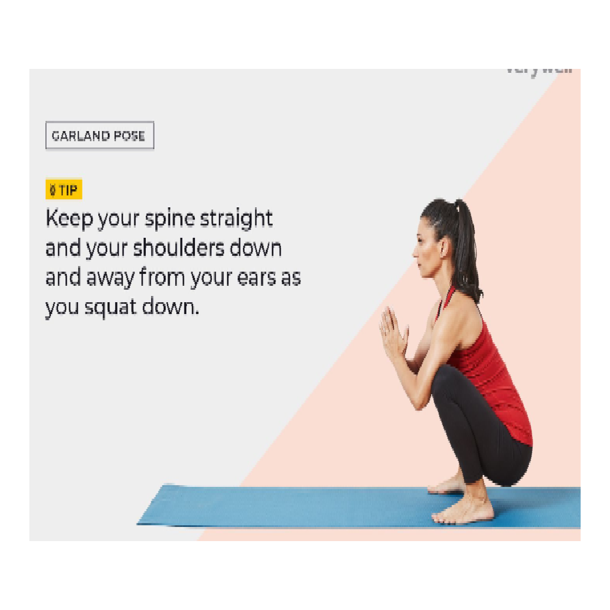
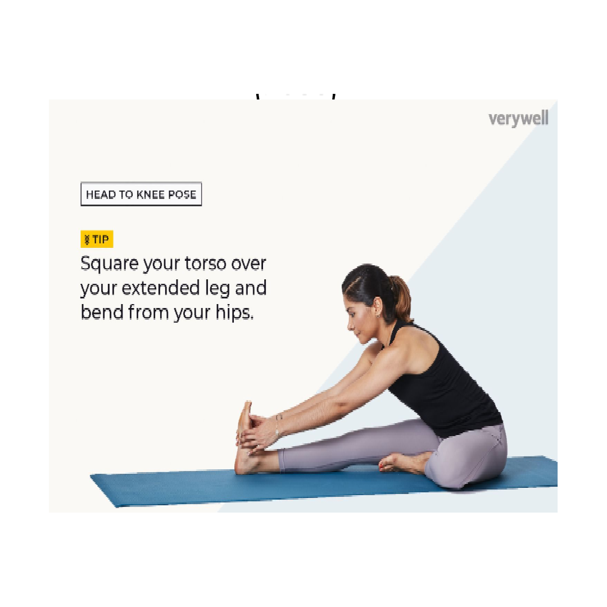
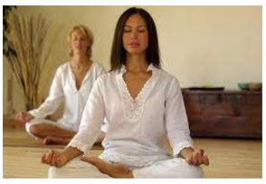
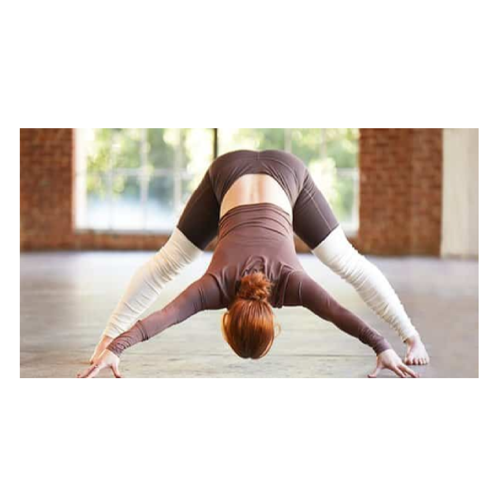

Yogasanas

Garland Pose (Malasana)
- Start with feet about a mat’s width apart.
- Bend your knees and lower your buttocks toward the floor to come into a squat position.
- Bring your hands in prayer position (anjali mudra). You can allow your thumbs to touch your
- sternum to help keep the chest lifted.
- Press your upper arms/triceps inside of your knees and stay engaged with spine straight (elbows
- press into knees to open the hips).
- Extend the low back and draw shoulder blades toward one another.
- Remain in this position for up to 5 breaths.
- Come out of it by straightening your legs.
- Repeat the pose for a total of three times

Head-to-Knee Pose (Janusirsana)
- Sit down on a yoga mat.
- Extend the left leg to the corner of your mat, foot flexed, back of the heel down, toes to the sky.
- The right knee is bent with the foot tucked as close as comfortable to the groin.
- Extend your arms over the legs, breathe in deeply, and exhale, moving the upper body gently
- toward the left foot, while slowly bringing your right arm in an arc over your head. A strap is nice
- to create resistance and go deeper into this stretch of the rib cage facing the sky (the right on this
- side).
- Feel the twist of the torso, the shoulder/hip opener, the gentle massage of the sacroiliac joint,
- and the movement of kidneys, ovaries, and each internal organ with each deep breath.
- Do 7–12 on each side.

Bonus breathing technique (Kapalbhati Pranayama)
- Sit in a chair or cross-legged on the floor.
- Close your eyes and try to relax the entire body.
- Inhale deeply through the nose while expanding the
- chest.
- Exhale with forceful abdominal muscle contractions to
- relax.
- Repeat 10 times (1 cycle) up to 5 minutes while
- beginning.

Prasarita Padottanasana
- Repeat for up to three sets, maintaining
- each position for 30 seconds. Spread your feet out
- wide with the tips pointing inward. Keep your
- knees straight. Extend your hands out to hold
- your big toes.